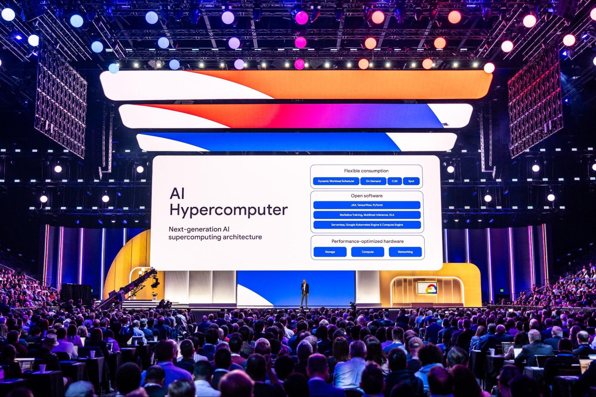
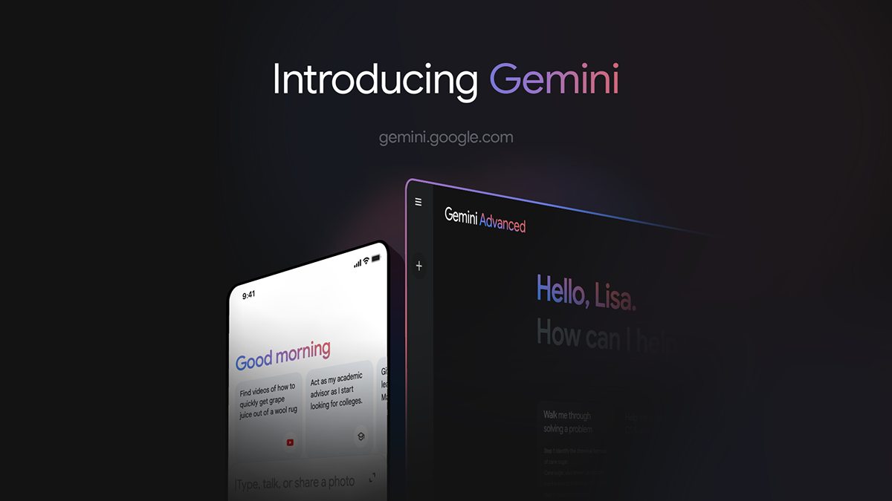
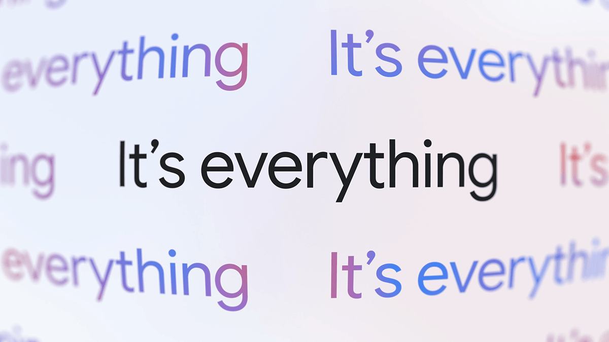
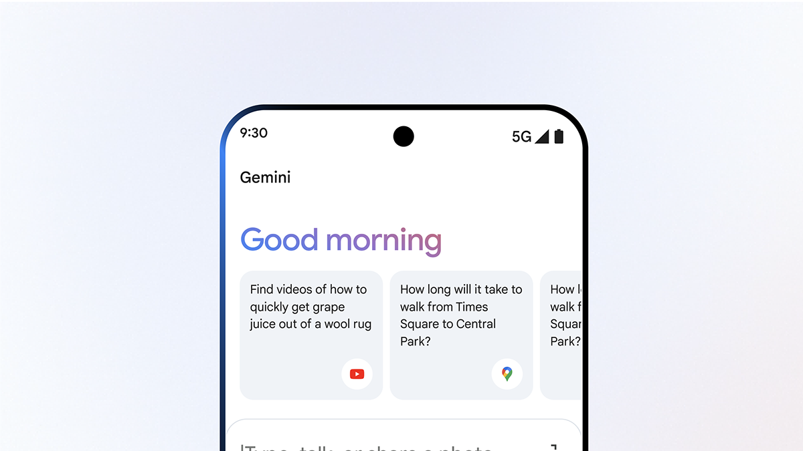

Google IA - Gemini
A empresa Google IA tem como objetivo principal melhorar a qualidade de vida de seus usuários. Para isso, continuará desenvolvendo produtos e plataformas inovadoras, para atender às necessidades de bilhões de usuários ao redor do globo.
Ricardo dos Santos
Lucas S. Gonçalves
Luiz Henrique
Guilherme Ferreira
Desenvolvido pelos alunos da Fatec Carapicuiba, cursando o Curso de ADS, sob a disciplina de MicroInformatica.
O Google IA oferece acesso direto ao seu hardware quântico ou acesso baseado em nuvem?
O Google oferece acesso ao seu hardware quântico principalmente pela Google Cloud, onde usuários e desenvolvedores podem usar seus processadores quânticos na nuvem.

A empresa oferece soluções quânticas completas (hardware, software e algoritmos) ou apenas uma parte delas?
O Google oferece soluções quânticas completas, incluindo tanto o hardware (como o processador Sycamore) quanto o software e os algoritmos, como o Cirq.
Quais são os planos da empresa para o futuro em termos de pesquisa, desenvolvimento e comercialização?
O Google pretende continuar melhorando seu hardware quântico, desenvolver novos algoritmos e expandir suas capacidades para aplicações práticas em várias indústrias.
Quais publicações científicas a empresa tem sobre seus avanços tecnológicos?
Google AI tem várias publicações importantes, incluindo um artigo famoso sobre "supremacia quântica" na revista Nature em 2019, que marca um grande avanço da empresa.
Google IA tem foco em pesquisa e desenvolvimento, ou em aplicações comerciais?
O Google está em ambas: pesquisa e desenvolvimento e aplicações comerciais. Eles investem bastante em pesquisa, mas também querem aplicar a computação quântica de forma prática.
Qual é o histórico da empresa em pesquisa e desenvolvimento?
O Google tem um histórico forte em pesquisa e desenvolvimento, investindo muito em várias áreas de tecnologia, incluindo inteligência artificial e computação quântica. Eles têm feito muitos avanços em aprendizado de máquina e algoritmos quânticos.